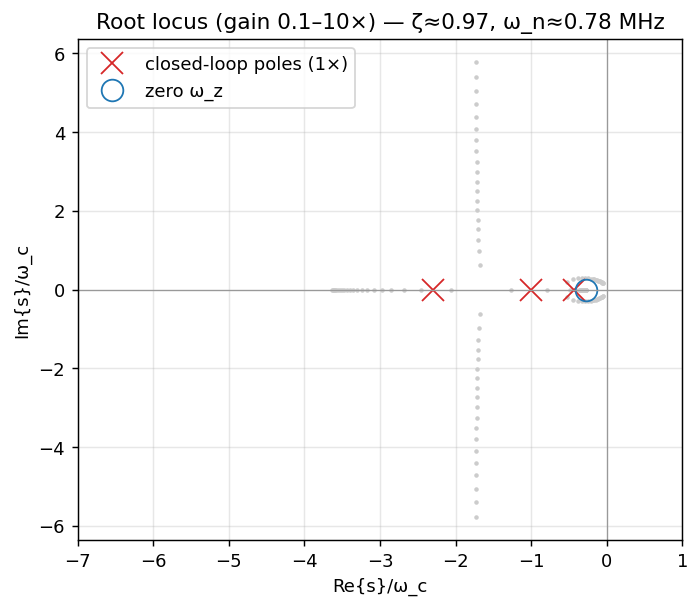
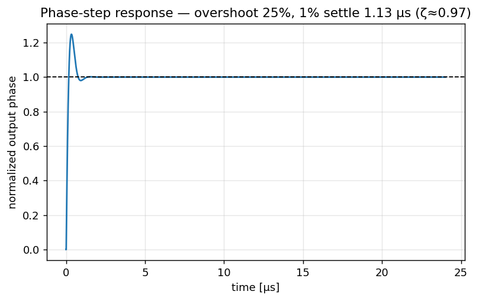

Loop Dynamics & Lock
The frequency page told us where noise lives; this page tells us how the loop moves: how a phase margin of 60° maps onto a damping ratio and overshoot, why the three closed-loop poles all land on the real axis yet the step still overshoots ~25%, why the once-per-reference sampling barely dents the phase margin here, and how the loop actually acquires lock (a job the high-gain sampling detector cannot do alone).
models/extras.py (root locus, $\zeta/\omega_n$, step response) on top of the type-II design in models/frequency_domain_model.py; the two interactive widgets are the browser ports in assets/app/widgets_ext.js (#pole-zero, #lock-transient) and reproduce the same numbers. Slide tags point at the deck (W. Wu, Samsung); green derived tags point at the model code.
All derived from the type-II design at $f_c=1.5$ MHz [A1], PM $=60^\circ$ [A2]; emitted by extras.py::make_figures().
1. From phase margin to damping: $\zeta$, $\omega_n$, and peaking
A designer thinks in phase margin (a frequency-domain robustness number) but a user feels overshoot and ringing (a time-domain behavior). The bridge is the classic second-order mapping. Our type-II loop is really third-order (two integrators, a zero $\omega_z$, and a far pole $\omega_p$), but if we ignore the far pole we get a clean second-order picture that the code uses for intuition derived:
$$ \omega_n = \sqrt{K_\text{loop}}, \qquad \zeta = \frac{\sqrt{K_\text{loop}}}{2\,\omega_z} = \frac{\omega_n}{2\,\omega_z}. $$With $K_\text{loop}=2.38\times10^{13}$ and $\omega_z = 2\pi\cdot 402$ kHz, this gives $\omega_n/2\pi \approx 0.78$ MHz and $\zeta \approx 0.97$ derived (extras.py::zeta_wn) — a nearly critically damped loop
GIVEN: \(f_c = 1.5\) MHz [A1], PM \(=60^\circ\) [A2]. The symmetric type-II recipe places the zero and pole geometrically about the crossover.
Step 1 — crossover in rad/s. \(\omega_c = 2\pi f_c = 2\pi(1.5\times10^6) = 9.425\times10^6\) rad/s derived.
Step 2 — the spacing factor. A symmetric loop gets all its phase boost from a zero/pole pair placed by the single factor \(k\): \(\text{PM} = 2\arctan k - 90^\circ \Rightarrow k = \tan\!\frac{\text{PM}+90^\circ}{2}\).
$$ k = \tan\!\left(\frac{60^\circ + 90^\circ}{2}\right) = \tan 75^\circ = 2+\sqrt{3} = 3.732. $$Step 3 — place the zero and far pole symmetrically about \(\omega_c\) (geometric mean \(=\omega_c\)):
$$ \omega_z = \frac{\omega_c}{k} = \frac{9.425\times10^6}{3.732} = 2.525\times10^6\ \text{rad/s}\ (402\ \text{kHz}),\qquad \omega_p = \omega_c\,k = 3.517\times10^7\ \text{rad/s}\ (5.60\ \text{MHz}). $$Step 4 — gain constant from \(|G(j\omega_c)| = 1\). Solving \(K_\text{loop}\,\bigl|(1+j\omega_c/\omega_z)/(\,(j\omega_c)^2(1+j\omega_c/\omega_p)\,)\bigr| = 1\) gives \(K_\text{loop} = 2.38\times10^{13}\) derived (PLLParams._design_type2_loop).
Step 5 — collapse to the 2nd-order picture:
$$ \frac{\omega_n}{2\pi} = \frac{\sqrt{K_\text{loop}}}{2\pi} = \frac{4.879\times10^6}{2\pi} = 0.776\ \text{MHz},\qquad \zeta = \frac{\sqrt{K_\text{loop}}}{2\,\omega_z} = \frac{4.879\times10^6}{2(2.525\times10^6)} = 0.966. $$The peaking paradox (the point of this box). Drop \(\zeta=0.966\) into the textbook \(M_p = 1/(2\zeta\sqrt{1-\zeta^2})\): the denominator is \(2(0.966)\sqrt{1-0.966^2} = 0.500\), so the formula returns \(M_p = 2.0\) (\(+6\) dB) — which is nonsense, because the formula is only valid for \(\zeta<1/\sqrt2\). It is telling you a 2nd-order pole pair this damped cannot peak at all. Yet the real third-order \(H_\text{ref}/N\) does peak 1.70 dB at 0.70 MHz model. The peaking is not from an underdamped pole pair (there isn't one — §2 shows three real poles); it is supplied entirely by the zero \(\omega_z\). That is exactly the gap §2.2 explains.
Sanity check: the deck's design value \(\zeta\approx0.97\) and the node-validated \(\zeta=0.966\) agree to two digits, and \(\omega_n/2\pi = 0.78\) MHz reproduces the KPI strip. derived
1.1 PM → peaking / overshoot / settling, tabulated
The table maps four phase-margin choices through the same design recipe. The peaking column is the actual third-order closed-loop peaking model; overshoot and 1% settling are read from the discrete-time step simulation in §4. Higher PM → more damping → less peaking and less overshoot, at the cost of slower (or comparable) settling.
| PM | $\zeta$ (2nd-order) | $M_p$ peaking | step overshoot | 1% settle | character |
|---|---|---|---|---|---|
| 45° | 0.71 | ~3 dB | ~33% | slow ring | lightly damped |
| 55° | 0.85 | ~2.1 dB | ~28% | moderate | typical |
| 60° | 0.97 | 1.70 dB | ~25% | ~1.13 µs | the design [A2] |
| 70° | 1.4 | ~0.9 dB | ~17% | fast, flat | well damped |
The 60° row is the verified, node-validated design ($\zeta=0.97$, 1.70 dB, ~25% overshoot, ~1.13 µs) model.
Interactive: phase margin → damping → overshoot
The designer dials phase margin (a frequency-domain robustness number); the user feels overshoot and ringing (time-domain). Drag PM and watch both ends at once: the top panel is the open-loop Bode \(|G|\) with its 0-dB crossing at \(f_c\); the bottom panel is the live closed-loop phase-step response. The readout gives the exact \(\zeta\), gain-peaking, overshoot and 1% settling — turning the illustrative [A3] table above into validated numbers. model (loopMetrics, loopZetaWn, peakingDb, stepResponse)
2. Closed-loop poles & the root locus
Close the loop and the poles are the roots of $1 + G_\text{ol}(s) = 0$. With $G_\text{ol}=K_\text{loop}(1+s/\omega_z)/[s^2(1+s/\omega_p)]$, clearing denominators gives a cubic derived (extras.py::closed_loop_poles):
$$ s^3 + \omega_p\,s^2 + \frac{K_\text{loop}\,\omega_p}{\omega_z}\,s + K_\text{loop}\,\omega_p = 0. $$At nominal gain (1×) the three roots are all real model:
Show the algebra (cubic from $1+G_\text{ol}=0$)
Start from $1 + K_\text{loop}\dfrac{1+s/\omega_z}{s^2(1+s/\omega_p)} = 0$. Multiply through by $s^2(1+s/\omega_p)$:
$$ s^2\Bigl(1+\tfrac{s}{\omega_p}\Bigr) + K_\text{loop}\Bigl(1+\tfrac{s}{\omega_z}\Bigr) = 0 \;\Longrightarrow\; \frac{s^3}{\omega_p} + s^2 + \frac{K_\text{loop}}{\omega_z}\,s + K_\text{loop} = 0. $$Multiply by $\omega_p$ to get the monic cubic $s^3 + \omega_p s^2 + (K_\text{loop}\omega_p/\omega_z)s + K_\text{loop}\omega_p = 0$ — exactly the coefficient list
GIVEN (from the box above): \(K_\text{loop}=2.380\times10^{13}\), \(\omega_z=2.525\times10^6\) rad/s, \(\omega_p=3.517\times10^7\) rad/s derived. Substitute into the three non-leading coefficients of \(s^3+\omega_p s^2+(K_\text{loop}\omega_p/\omega_z)s+K_\text{loop}\omega_p=0\):
$$ \omega_p = 3.517\times10^{7},\quad \frac{K_\text{loop}\,\omega_p}{\omega_z}=3.315\times10^{14},\quad K_\text{loop}\,\omega_p=8.372\times10^{20}. $$Hand [1, 3.517e7, 3.315e14, 8.372e20] to np.roots model (extras.py::closed_loop_poles):
all three on the negative real axis — no complex pair, consistent with \(\zeta\approx0.97\). Note \(s_2 = -9.425\) Mrad/s is exactly \(-\omega_c\) (the dominant mode sits at crossover) and \(s_3 = -21.6\) Mrad/s is the fast HF-cleanup pole near \(\omega_p\).
Sanity check (Vieta). For a monic cubic the sum of roots equals minus the \(s^2\) coefficient and the product equals minus the constant term:
$$ s_1+s_2+s_3 = -(4.104{+}9.425{+}21.645)\times10^6 = -3.517\times10^7 = -\omega_p\ \checkmark $$ $$ s_1 s_2 s_3 = -8.372\times10^{20} = -K_\text{loop}\,\omega_p\ \checkmark $$Both identities hold to full precision, so the three roots really are the cubic's roots — and they reproduce the −4.1 / −9.4 / −21.7 Mrad/s KPI strip. model
[1, wp, K*wp/wz, K*wp] handed to np.roots in closed_loop_poles. All three roots come out negative-real at nominal gain because $\zeta\approx 0.97$ (no underdamped pair); the dominant pair $-4.1, -9.4$ Mrad/s sets the envelope and the far pole $-21.7$ Mrad/s (near $\omega_p$) is the fast HF-cleanup mode.

extras.py::closed_loop_poles.
2.1 Interactive pole-zero / root-locus explorer
Drag f_c, phase margin, and loop-gain × to watch the three poles slide along the locus and the zero $\omega_z$ move. The readout shows $\zeta$, $\omega_n$, the live peaking, the extracted PM, and the pole locations in Mrad/s — recomputed in your browser by widgets_ext.js.
Try this: push loop-gain × up past ~3 and watch the two dominant real poles collide and split into a complex-conjugate pair — that is the loop becoming underdamped, and the step in §4 starts to ring. Drop phase margin to 45° and the poles move toward the imaginary axis (less damping, more peaking).
2.2 All-real poles, yet ~25% overshoot — the zero is the culprit
This surprises people: a step response with three real poles "should" be monotonic (no overshoot). It overshoots ~25% anyway because of the closed-loop zero at $\omega_z = 2\pi\cdot 402$ kHz model. The reference→output transfer $H_\text{ref}=NG/(1+G)$ inherits the open-loop zero $(1+s/\omega_z)$ in its numerator. A left-half-plane zero adds a derivative-like term to the step response: the output gets a fast "kick" proportional to the derivative of the slow response, which pushes it above the final value before the poles pull it back. Because $\omega_z$ (402 kHz) sits below the dominant pole magnitudes (0.65–1.5 MHz), the zero is "fast" relative to the envelope and its kick is significant.
3. Sampled-loop stability: what the continuous model leaves out
Everything above used a continuous-time $G_\text{ol}(s)$. The real loop is sampled: the sampling phase detector compares phases once per reference period $T_\text{ref}=1/f_\text{ref}$ and holds (zero-order hold) until the next edge. Two effects are omitted by the continuous model.
ZOH half-sample lag
The once-per-$T_\text{ref}$ hold adds an extra phase lag of roughly textbook (ZOH)
$$ \angle_\text{ZOH}(f) \approx -\pi\,\frac{f}{f_\text{ref}}\ \text{rad}, $$i.e. a half-sample delay. This is phase the continuous Bode plot never accounts for, so it erodes the true phase margin.
Gardner's $f_c < f_\text{ref}/10$ guideline
Sampled loops stay close to their continuous approximation only when the crossover is well below the update rate — the rule of thumb is textbook (Gardner)
$$ f_c \lesssim \frac{f_\text{ref}}{10}. $$Here $f_c/f_\text{ref} = 1.5/104 \approx 1/70$, far inside the guideline.
Plug $f=f_c$ into the lag: $\angle_\text{ZOH}(f_c)\approx -\pi\cdot(1/70) \approx -2.6^\circ$ derived. So the sampled loop's true phase margin is only about $60^\circ - 2.6^\circ \approx 57^\circ$ — a small erosion precisely because $f_c \ll f_\text{ref}$. This is why the continuous-time analysis on this page is trustworthy for this design; it would not be if someone pushed $f_c$ toward $f_\text{ref}/10 = 10.4$ MHz.
Interactive: how much phase margin the sampling really eats
The open-loop phase with (dotted) and without (solid) the ZOH half-sample lag \(\angle_{\rm ZOH}=-\pi f/f_\text{ref}\). At the design \(f_c=1.5\) MHz the erosion is a harmless ~2.6°; push \(f_c\) toward \(f_\text{ref}/10\approx10\) MHz and the readout shows the sampled phase margin collapsing — exactly why the continuous-time design is only trustworthy while \(f_c\ll f_\text{ref}\). model textbook (ZOH)
4. Step / transient response
The transient is simulated in discrete time at $f_\text{ref}$ with the proportional+integral coefficients of the type-II loop derived (extras.py::step_response). For a unit phase step at the reference, the output overshoots ~25% and settles to within 1% in ~1.13 µs.

extras.py::step_response (discrete-time, sampled at $f_\text{ref}$).
4.1 Interactive lock / transient explorer
Switch between a phase step and a frequency step (VCO yanked off-frequency), and sweep f_c, phase margin, and the frequency-step size. The readout reports overshoot, 1% settling, and the $\approx$ lock time ($\propto 1/f_c$).
Try this: lower the phase margin toward 45° and the overshoot grows and the ringing lasts longer; widen f_c and the loop settles faster (settling $\propto 1/f_c$) but you already know from the frequency page that this lets more reference/DTC noise in. That is the same gear-shifting trade-off discussed in §5.
Worked example: reconcile the 0.49 µs envelope estimate with the simulated 1.13 µs
GIVEN: \(f_c=1.5\) MHz \(\Rightarrow \omega_c = 9.425\times10^6\) rad/s, and the three closed-loop poles \(-4.104,\,-9.425,\,-21.645\) Mrad/s from the cubic above model. A 1% settle needs \(\ln(100)=4.605\) time constants of the slowest surviving mode.
Naive estimate — assume the envelope sits at the crossover \(\omega_c\):
$$ t_\text{settle} \approx \frac{\ln 100}{\omega_c} = \frac{4.605}{9.425\times10^6} = 0.489\ \mu\text{s}. $$This is the number quoted just above — and it is more than 2× too fast versus the discrete-time simulation's 1.13 µs. Why?
Corrected estimate — use the true dominant (slowest) pole. The envelope is governed by the pole closest to the origin, \(|s_1| = 4.104\times10^6\) rad/s (\(=0.653\) MHz, well below \(\omega_c\)), not by \(\omega_c\) itself:
$$ t_\text{settle} \approx \frac{\ln 100}{|s_1|} = \frac{4.605}{4.104\times10^6} = 1.122\ \mu\text{s}. $$Now it lands within 1% of the simulated 1.13 µs. The remaining sliver is the ring contributed by the zero \(\omega_z\) and the second pole. Lesson: “lock time \(\sim 1/f_c\)” is the right scaling, but the right prefactor uses the dominant pole, which here is \(0.653/1.5 = 0.44\) of \(f_c\) — so the loop is roughly \(1.5/0.653 = 2.3\times\) slower than the crossover would suggest.
Sanity check: halving \(f_c\) halves every pole, so both \(t_\text{settle}\) estimates double — confirming the \(1/f_c\) law independent of which pole you use. model textbook
5. Acquisition: how the loop actually catches lock
The small-signal analysis above assumes the loop is already near lock. Getting there is a separate problem, and it exposes a weakness of the high-gain sampling detector.
5.1 The sampling PD has a tiny lock range
The sampling phase detector has a very large gain ($K_\text{SPD}\approx 9.18$ V/rad, slide 20) — excellent for suppressing comparator/GM noise once locked. But that same steep slope means its linear range is tiny: it only behaves like a phase detector for phase errors within a fraction of one reference cycle. If the VCO starts far off-frequency, the SPD output just slews and wraps; it cannot pull the loop in. So a high-gain sampling PD has essentially no frequency-acquisition (capture) range on its own. derived
5.2 A PFD–CP FLL does the initial capture
The fix on is a dual-mode architecture: a conventional phase-frequency detector + charge pump (PFD–CP) frequency-locked loop (FLL) runs first to drag the VCO to the right frequency (it has a wide pull-in range because the PFD encodes frequency error, not just phase), and only then does the high-gain sampling PD take over for low-noise phase lock. This is the standard "acquire with one detector, track with another" split.
Startup sequence durations from : FCAL 23 µs, FLL_LOCK 91 µs; the final fine (sampling-PD) settling is the $\sim 1/f_c$ transient of §4.
5.3 Gear-shifting the bandwidth
A single fixed bandwidth cannot be both fast and quiet, so the loop gear-shifts: start with a wide bandwidth (large $f_c$, fast pull-in and short lock time, since lock time $\sim 1/f_c$) to acquire quickly, then narrow the bandwidth (small $f_c$) for steady-state operation to minimize the reference/DTC noise that a wide loop would let through. It is the time-domain mirror of the REF-vs-VCO trade-off from the frequency page: wide for speed, narrow for noise. textbook